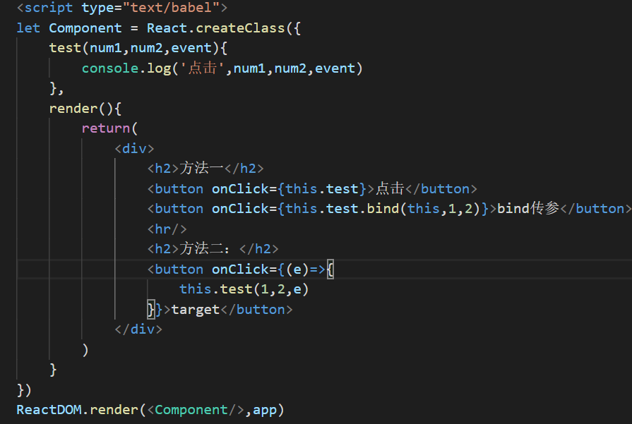

一、函数化编程
特点：
1、声明式 VS 命令式（包括步骤的说明）：
声明式：
```命令式
var arr = [10,20,30,40];
for(var i=0;i<arr.length;i++){
arr[i]+=10
}
```声明式
arr.map(item=>item+=10)
2、纯函数：输入一定输出也一定
3、柯里化函数：将多个形参的函数转化成单个形参的函数
如：f(a,b,c) 转化成 f(a)(b)(c)
例：请编写一个函数add(1)(2)(3)结果为6，编写一个函数add(2)(3)结果为5**
```javascript
function add(a){
return function(b){
return function(c){
return a+b+c
}
}
}
```ES6箭头函数
let add= a=>b=>c=>a+b+c
add(1)(2)(3)
二、React的特点
1、声明式设计；
2、高效；
3、灵活；
4、JSX-JSX是Javascript语法的扩展；
5、组件；
6、单向响应的数据流
三、React创建组件
1、通过React.createClass方法创建组件；
2、配置项里固定有一个render函数；
3、render函数里要求return页面模板；
4、组件也是一个虚拟dom.
<script type="text/babel">
正常的js代码不能直接写标签 jsx也不行，想使用需要将jsx的语法进行解析
type='text/babel' 是告诉浏览器该标签的内部需要解析jsx
let Component = React.createClass({
render(){
return(
<div>
<h1>react组件创建</h1>
</div>
)
}
})
将组件挂载到app元素上：
参数1：要挂载的组件；
参数2：要挂载的元素；
ReactDOM.render(<Component/>,document.getElementById('app'))
let Box = React.createClass({
render(){
return(
<div id="test">
<h1 class="red"> jsx语法（vue中的模板）</h1>
<hr/>
<p>
123
<span>1</span>
</p>
</div>
)
}
})
jsx(javascript xml):可以让我们在js里写html标签
1、标签必须闭合；
2、必须有一个根元素；
四、React数据承载
let Component = React.createClass({
getInitialState(){
return{
name:'LWK'
}
},
render(){
console.log(this)
return(
<div>
<h1>{this.state.name}</h1>
{this.props.hehe}
</div>
)
}
})
ReactDOM.render(<Component hehe='CJR'/>,app)
五、React条件渲染(vue中v-if)
let Component = React.createClass({
getInitialState(){
return{
show:false
}
},
renderDiv(){
if(this.state.show){
}else{
return(<img src="cdzrf"/>)
}
},
render(){
return(
<div>
<h1>条件渲染</h1>
{this.state.show?<div>div</div>:<p>p</p>}
{!this.state.show || <div>div</div>}
{this.renderDiv()}
</div>
)
}
})
注释方式： {/* */}
控制一个元素的渲染： ||
2个元素切换：三元表达式
渲染的东西比较多：用函数
六、React数据绑定
react 不允许直接将对象绑定在页面
react 绑定数组到页面回将数组的每一项拆分
let Component = React.createClass({
getInitialState(){
return{
obj:{us:123,ps:456},
arr:['的','特','呢'],
tabs:['动作','恐怖','动漫','喜剧'],
tab:[<li>动作</li>,<li>恐怖</li>,<li>动漫</li>]
}
},
render(){
return(
<div>
{this.state.arr}
{this.state.obj.us}
<hr/>
<ul>
{this.state.tabs.map((item,index)=>{
return(<li>{item}</li>)
})}
</ul>
<hr/>
<ul>
{this.state.tab}
</ul>
</div>
)
}
})
七、React事件绑定(vue中v-on)
方法一：直接调用处理函数：
- react中的事件和原生类似，将原生事件使用变成驼峰命名法 onclick----->onClick;
- 默认参数是事件对象，传递参数不能写(),所以通过bind进行传参，默认参数放到最后
方法二：在事件的函数里，调用目标处理函数
- 注意：需要手动传递事件对象

八、React属性绑定(vue中v-bind)
react中定义属性使用className

setState函数：通知组件重新渲染一遍，是一个异步函数
- 参数1 ：表示要修改的数据；
- 参数2：是一个回调，当数据修改结束后执行
setState同步中：修改数据不会直接更新页面，将同一个事件循环所有的setState合并，更新一次页面；
setState异步中：每一次都会触发页面刷新
九、React中ref的使用
1、通过ref，绑定dom，通过refs，获取相关的dom元素
2、通过ref，绑定组件，可以获取组件对象，获取绑定组件的相关方法
九、React中作用于插槽的使用
- 组件标签中写的内容不会被渲染，但是可以在组件内部通过this.props.children获取使用
- 内容写在哪个组件标签内，便可以在该组件内部通过this.props.children获取使用